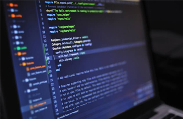
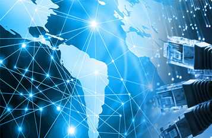

Workshops are interactive, focused sessions designed to provide hands-on learning and skill development. Unlike regular classes, workshops emphasize practical experience through group activities, discussions, simulations, and real-world applications. They often address specific technical skills or emerging technologies and are conducted by faculty, industry experts, or trainers. Workshops help students bridge the gap between theory and practice, enhance collaboration, and build essential skills for academic and professional growth.
Seminars are formal gatherings where experts or students present research findings, innovations, or topic reviews. They provide a platform for knowledge exchange, discussion, and critical feedback. Seminars help develop communication skills, deepen subject knowledge, and foster intellectual engagement within the department. Participation in seminars exposes students to current trends and research developments, encouraging continuous learning and academic excellence.
Hackathons are intensive coding and development competitions where participants collaborate to solve problems or build software projects within a limited time. These events stimulate innovation, teamwork, and creative problem-solving under pressure. Hackathons encourage students to apply their programming skills practically, promote healthy competition, and often lead to prototype developments or startup ideas.
Cultural Fests are vibrant events celebrating diversity, creativity, and student talent through music, dance, drama, art, and various cultural activities. They foster community spirit, enhance interpersonal skills, and provide a break from academic routine. Cultural Fests promote holistic development and create a lively campus environment that supports student well-being and social engagement.
 